Samba Solar Track
Configurer, vérifier et régler, pas à pas
De la première mise sous tension, en passant par le programme de mise en route, jusqu'à chaque valeur. Avant tout pour le Samba-Solar-Rack, et tout autant pour tout autre suiveur à un ou deux axes.
Commencer par le chapitre 2 et suivre l'ordre. Chercher une valeur ?
Le chapitre 7 explique chaque valeur, l'annexe A les montre toutes d'un coup d'œil.
© Silvio Sternitzke, 11/2026 · Samba Solar Track · Manuel de configuration et de réglages 10 pouces · Licence CC BY-NC-SA 4.0 · aucune utilisation commerciale par des tiers
Tout ce que décrit ce manuel est réalisé dans le firmware 0.7.0 et vérifié sur PC et en simulation (tests automatiques, images issues du vrai code de l'interface). Sur un vrai rack avec vérins, anémomètre et capteur solaire, ce n'est pas encore éprouvé ; la carte RearCircuitBoard_10 n'est pas encore fabriquée. Les valeurs limites des contrôles du programme de mise en route ne seront fixées qu'une fois les vérins livrés et mesurés sur le rack. Les hypothèses sont marquées dans le texte par Hypothèse.
1À propos de ce manuel
Ce manuel vous guide de la première mise sous tension de la commande jusqu'au suivi entièrement réglé. Vous n'avez besoin d'aucune connaissance préalable. Chaque terme technique figure dans le glossaire.
Ce que couvre ce manuel
- La configuration à l'écran : langue, mode de fonctionnement, anémomètre, réseau, heure, accès distant, design, son, écran et firmware (chapitre 4).
- Le programme de mise en route : sur le rack terminé, il vérifie pas à pas chaque fonction et chaque course. Ce n'est qu'ensuite que l'installation suit le soleil d'elle-même (chapitre 5).
- Lieu, orientation, soleil et nuit : où se trouve le rack, vers où est-il tourné, quand fait-il nuit (chapitre 6).
- Chaque valeur réglable avec sa signification, son réglage d'usine, ses limites, une recommandation pour le Samba-Solar-Rack et une explication pour toute autre installation (chapitre 7).
- Ce que vous pouvez régler dans le navigateur et ce qui n'est possible qu'à l'écran (chapitre 8).
Ce qu'il ne couvre pas
- Le montage de la mécanique. Pour cela, voir le manuel de montage du Samba-Solar-Rack (site web et boutique) ou la notice de votre structure.
- Le raccordement des câbles. Pour cela, voir le manuel de câblage (uniquement en allemand ; fichier
verkabelung.htmldans le même dossier). - Les cartes, le chargement du firmware et le contrôle du matériel. Pour cela, voir le manuel de montage et d'utilisation (fichier
index.html).
Ne commencez ce manuel que lorsque le rack est monté, que le câblage est terminé et vérifié (manuel de câblage, uniquement en allemand) et que la commande est alimentée. Le programme de mise en route fait bouger le rack.
Un ou deux axes : voici comment les sections sont marquées
Samba Solar Track fonctionne selon deux modes. La plupart des utilisateurs ont deux axes ; les deux modes sont décrits ici de façon équivalente. Ce qui ne vaut pas pour les deux porte une marque :
1 axe
Mode « vertical seul ». Le rack ne change que son inclinaison (élévation). C'est ainsi que fonctionne le Samba-Solar-Rack.
2 axes
Mode « vertical + horizontal ». Le rack s'incline et tourne en plus d'est en ouest (azimut).
les deux
Vaut pour toute installation. Les sections sans marque valent aussi pour les deux.
facultatif
Peut être sauté. La commande fonctionne en toute sécurité même sans ce point.
Comment lire les étapes
Chaque étape du programme de mise en route comporte quatre champs :
Ce qu'affiche l'écran. Presque toujours accompagné d'une image de l'écran.
Quelle touche vous appuyez et ce que vous faites sur le rack.
Le résultat attendu. Ne continuer que s'il est correct.
Ce que vous faites alors. Plus d'aide dans le dépannage.
Toutes les images de l'écran proviennent du vrai code de l'interface, générées sur PC. Sur l'appareil, les nombres (vent, luminosité, heure) peuvent être différents. Le design montré est « Standard », en français. Les images à 1 axe s'appellent y1_…, celles à 2 axes y2_….
2Le chemin vers l'installation terminée
La commande se configure en quatre étapes. L'ordre est fixe : sans configuration, aucun vérin ne bouge ; sans programme de mise en route, l'installation ne suit pas le soleil d'elle-même.
- Choisir la langueÀ la première mise sous tension, le choix de la langue apparaît de lui-même, réglé d'usine sur l'anglais. Le choix s'applique immédiatement. Résultat : tous les textes sont dans votre langue. Chapitre 4.1
- Configuration : mode de fonctionnement et anémomètreVous choisissez 1 ou 2 axes et votre anémomètre, puis touchez ENREG. + REDÉMARRER. Résultat : la commande redémarre. Dès lors, la protection tempête et la surveillance de l'anémomètre sont actives. Chapitre 4.2
- Programme de mise en routeIl s'ouvre de lui-même après le redémarrage et vérifie tout sur le rack, l'un après l'autre : carte, anémomètre, sens de déplacement, courses, capteur solaire, essai. Résultat : « Terminé ! Tous les contrôles sont réussis. » L'automatique est libre. Chapitre 5
- Réglage finLieu et orientation, valeurs du suivi, son, écran, accès distant. Résultat : l'installation fonctionne comme vous le souhaitez. Chapitre 6 et 7
La configuration prend quelques minutes. Pour le programme de mise en route, prenez votre temps et choisissez un jour avec peu de vent et un peu de soleil : les vérins parcourent plusieurs fois toute la course et ont besoin de pauses entre-temps (facteur de marche, chapitre 7). Vous pouvez interrompre le programme de mise en route à tout moment avec CONTINUER PLUS TARD et le reprendre plus tard au même endroit.
Ce que fait la commande à chaque étape
| Étape | Vérins | Protection tempête | Automatique (suivi, nuit) |
|---|---|---|---|
| Configuration manquante | ne bougent jamais | pas encore | désactivé |
| Configuration enregistrée, programme de mise en route en attente | uniquement dans le programme de mise en route, en mode manuel et en cas de tempête | active : en cas de tempête, le rack se met à plat | bloqué, bandeau violet « MISE EN ROUTE NON TERMINÉE » |
| Programme de mise en route terminé | normal | active | libre |
La protection tempête et le parking mettent le rack « à plat ». Le programme de mise en route vérifie dans quel sens cela se fait sur votre rack à l'étape 5. Jusque-là, c'est le réglage d'usine qui s'applique. Ne commencez donc pas le programme de mise en route par tempête, et restez-y jusqu'à ce que l'étape 5 soit réussie.
3Axes et directions
Avant que le rack ne bouge pour la première fois : ces mots reviennent sans cesse à l'écran. Ils valent pour tout rack.
Un axe : l'inclinaison (élévation) 1 axe aussi pour 2 axes
- PLUS RAIDE : les panneaux se redressent, leur bord supérieur monte. Utilisé le matin, le soir et en hiver, quand le soleil est bas.
- PLUS PLAT : les panneaux se couchent, vers l'horizontale. Utilisé à midi en été, en cas de tempête et la nuit.
- Les touches de l'écran s'appellent PLUS RAIDE et PLUS PLAT. Les bornes de la carte s'appellent toujours RAUF et RUNTER (HAUT et BAS). Quelle borne signifie « plus plat », c'est la valeur « Position à plat côté HAUT » qui le fixe ; le programme de mise en route la vérifie.
Deux axes : inclinaison et rotation (azimut) 2 axes
- EST : le rack tourne vers le soleil du matin. À la sortie de la carte, c'est le contact OST (bornier J5).
- OUEST : le rack tourne vers le soleil du soir (contact WEST, bornier J6).
- Un seul axe se déplace à la fois. Cela ménage l'alimentation.
- Le Samba-Solar-Rack n'a que l'inclinaison. Avec deux axes, on utilise une autre structure ; pour cela, chaque valeur du chapitre 7 indique comment trouver la bonne valeur.
Position à plat : la position sûre
| Motif | Élévation | Azimut 2 axes | Priorité |
|---|---|---|---|
| Tempête (rafale au-dessus du seuil de tempête) | se met à plat, reste à plat jusqu'à la fin du temps de maintien | reste immobile | la plus haute ; ne peut pas être outrepassée |
| L'anémomètre ne répond pas | se met à plat, automatique bloqué | reste immobile | haute ; le mode manuel reste possible, alors sans protection tempête |
| PARQUER À PLAT (touche) | se met à plat, reste ainsi jusqu'à ANNULER PARKING | reste immobile | au-dessus de l'automatique |
| Nuit | se met à plat (position 0) | puis vers l'est, si « La nuit, retour à l'est » est activé | déplacement normal, sans priorité |
Le firmware appelle la position de nuit « position 0 ». Elle est dans le même sens que la position tempête (choix fait lors de la réalisation, Hypothèse : pour chaque variante de vérin, la butée côté plat est aussi la position de nuit judicieuse).
4Configuration à l'écran
La configuration apparaît d'elle-même à la première mise sous tension. Plus tard, vous y accédez par la roue dentée en haut à droite du tableau de bord. Si l'appareil est déjà configuré, la commande, protection tempête comprise, continue de fonctionner tant que la configuration est ouverte.
Tant que le mode de fonctionnement et l'anémomètre ne sont pas enregistrés, toutes les sorties restent coupées. Le voyant BEREIT (PRÊT) clignote. Configurez donc la commande dès la première mise sous tension.
4.1 Langue les deux

- Toucher la langueAu choix : English, Deutsch, Français, Español, Nederlands, Português et Polski. Résultat : les textes changent immédiatement, sans redémarrage. Le choix reste enregistré.
- Toucher SUITERésultat : la configuration apparaît.
Plus tard, vous changez la langue avec la touche portant le nom de la langue, en haut à droite de la configuration (par exemple « FRANÇAIS … »). L'interface web affiche toujours la langue de l'écran.
4.2 Mode de fonctionnement et anémomètre les deux
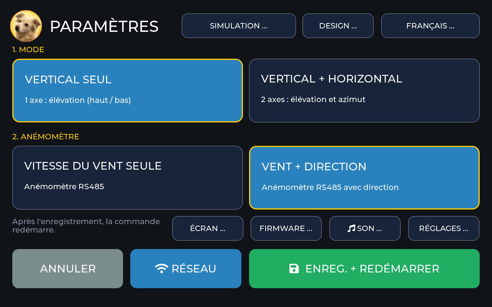
- Choisir le mode de fonctionnementVERTICAL SEUL (1 axe : élévation) ou VERTICAL + HORIZONTAL (2 axes : élévation et azimut). D'usine, rien n'est choisi. Résultat : la touche choisie est bleue avec un bord jaune.
- Choisir l'anémomètreVITESSE DU VENT SEULE ou VENT + DIRECTION. Les deux sont des anémomètres à sortie RS485 (Modbus RTU) ; les autres sorties (impulsions, 0–10 V, 4–20 mA) ne sont pas prises en charge. Résultat : la touche est marquée.
- Toucher ENREG. + REDÉMARRERLa touche ne fonctionne que lorsque les deux sont choisis. Résultat : toutes les sorties se coupent, la commande redémarre, puis le programme de mise en route s'ouvre.
1 axe vertical seul
Les sorties de l'azimut restent toujours ouvertes. À l'écran, les touches EST et OUEST n'existent pas ; à la place, il y a la carte INCLINAISON avec des angles fixes (0°, 30°, 60° et deux angles personnalisés). Du capteur solaire, seul nord contre sud compte.
2 axes vertical + horizontal
Les deux axes suivent le soleil, toujours l'un après l'autre. À l'écran, il y a PLUS RAIDE, PLUS PLAT, EST et OUEST. Le capteur solaire est évalué sur ses quatre côtés. La carte INCLINAISON avec des angles fixes n'existe pas.
Pour le Samba-Solar-Rack, deux capteurs séparés sur le même bus sont prévus : vitesse du vent (adresse 3) et direction du vent (adresse 4), donc VENT + DIRECTION. La direction du vent est seulement affichée et journalisée ; elle n'influence ni le suivi ni la protection tempête. Si vous n'avez qu'un capteur de vitesse, choisissez VITESSE DU VENT SEULE.
Vous pouvez modifier le mode de fonctionnement et l'anémomètre à tout moment. Les nouveaux réglages ne s'appliquent qu'après ENREG. + REDÉMARRER ; jusque-là, la commande continue avec les précédents. ANNULER rejette le choix. Si vous avez changé le mode de fonctionnement, vérifiez de nouveau l'installation ensuite : PROGRAMME DE MISE EN ROUTE → TOUT REVÉRIFIER (chapitre 5.4).
4.3 Les autres touches de la configuration
| Touche | Utilité | S'applique | Obligatoire ? |
|---|---|---|---|
| RÉSEAU | Wi-Fi, hotspot, heure, accès distant (4.4) | après ENREG. + REDÉMARRER | facultatif, nécessaire pour l'heure |
| DESIGN … | Couleurs de l'interface (4.6) | immédiatement | facultatif |
| SON … | Sons de confirmation, volume (4.7) | immédiatement | facultatif |
| ÉCRAN … | Veille, détecteur de mouvement, batterie (4.8) | immédiatement | facultatif |
| FIRMWARE … | vérifier et installer un nouveau firmware (4.9) | après confirmation | facultatif |
| RÉGLAGES … | toutes les valeurs réglables, programme de mise en route (chapitre 7) ; seulement après une configuration enregistrée | différent selon la valeur | – |
| SIMULATION … | Tester sans la carte RearCircuitBoard_10 (4.10) | après confirmation et redémarrage | uniquement pour essayer |
| FRANÇAIS … (nom de la langue) | Choix de la langue (4.1) | immédiatement | – |
4.4 Réseau : Wi-Fi, hotspot et heure facultatif
Le Wi-Fi est désactivé d'usine. La commande n'en a jamais besoin : le suivi et la protection tempête fonctionnent tout aussi bien sans réseau. Avec le Wi-Fi, vous obtenez cependant l'heure exacte (l'appareil connaît alors le lever et le coucher du soleil), l'interface web pour téléphone et PC et la vérification de nouveau firmware.
La carte n'a pas sa propre horloge sauvegardée par pile. L'heure ne vient que par le Wi-Fi, d'un serveur de temps. Sans Wi-Fi, l'appareil reconnaît la nuit à la luminosité (chapitre 6).
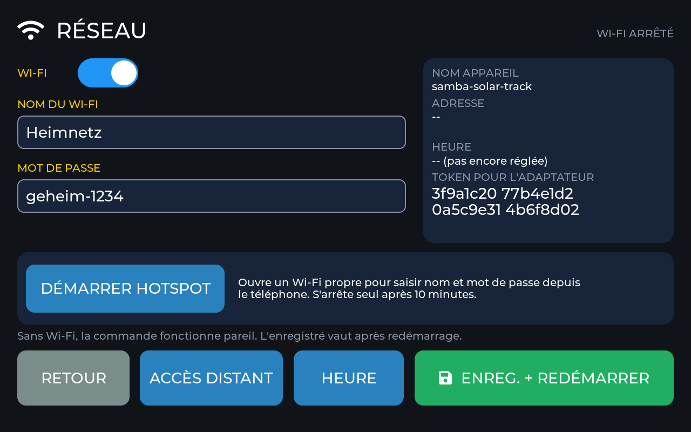
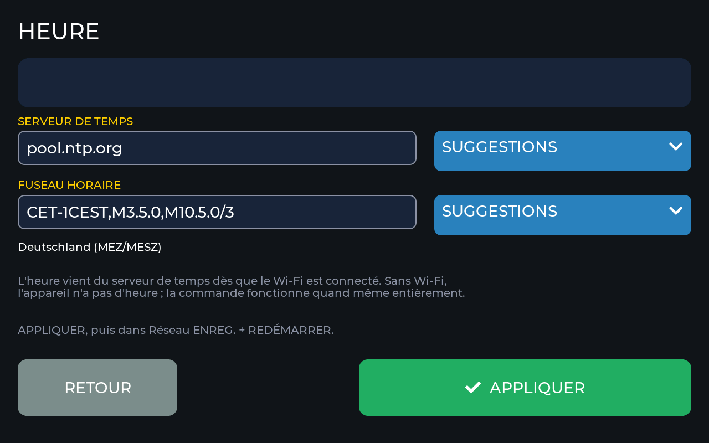
Voie A : saisir à l'écran
- Configuration → RÉSEAURésultat : l'écran RÉSEAU apparaît, en haut à droite « WI-FI ARRÊTÉ ».
- Activer le Wi-FiToucher l'interrupteur Wi-Fi. Résultat : l'interrupteur est bleu.
- Saisir le nom du Wi-Fi et le mot de passeToucher le champ, taper avec le clavier de l'écran, confirmer avec la coche. Le nom a de 1 à 32 caractères, le mot de passe est vide ou a de 8 à 63 caractères. Le clavier ne connaît pas les caractères accentués ; pour de tels noms, prenez la voie B. Résultat : le nom et le mot de passe sont dans les champs.
- Vérifier l'heureTouche HEURE. Réglage d'usine : serveur de temps
pool.ntp.org, fuseau horaire Allemagne (CET/CEST). Si vous habitez dans un autre fuseau horaire, choisissez-le dans SUGGESTIONS et touchez APPLIQUER. Résultat : vous êtes de retour dans l'écran RÉSEAU. - ENREG. + REDÉMARRERRésultat : toutes les sorties se coupent, l'appareil redémarre et se connecte. Dans l'en-tête apparaît le symbole Wi-Fi : blanc = connecté, jaune = pas de connexion. Peu après, l'heure s'affiche à sa gauche.
Voie B : par le hotspot de configuration (avec le téléphone)
- RÉSEAU → DÉMARRER HOTSPOTRésultat : l'appareil ouvre son propre Wi-Fi « Samba-Setup- » suivi de quatre caractères. Le nom et le mot de passe s'affichent à l'écran ; le mot de passe change à chaque démarrage.
- Connecter le téléphone à ce Wi-Fi et ouvrir
http://192.168.4.1dans le navigateurRésultat : la page de configuration apparaît (image de droite) avec une liste des Wi-Fi trouvés. - Choisir le Wi-Fi, saisir le mot de passe et le nom de l'appareil, enregistrerLe nom de l'appareil se compose de a–z, 0–9 et du tiret, d'usine
samba-solar-track. Résultat : l'appareil redémarre après 1,5 s et se connecte à votre Wi-Fi.

Le hotspot s'arrête de lui-même au bout de 10 minutes. Tant qu'il fonctionne, la connexion au Wi-Fi est suspendue.
À l'adresse qu'affiche l'écran RÉSEAU, ou à http://samba-solar-track.local (ou au nom d'appareil que vous avez donné). Si la connexion échoue, l'appareil réessaie toutes les 30 secondes, sans fin.
4.5 Accès distant : enregistrer le téléphone, bloquer la commande à distance facultatif
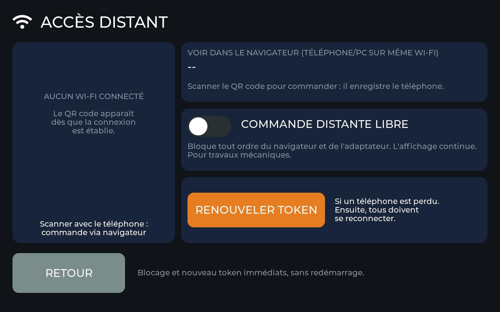
- QR code : apparaît dès que le Wi-Fi est connecté. Le scanner avec le téléphone ; le navigateur ouvre l'interface web et est enregistré. Sans enregistrement, le navigateur peut seulement regarder.
- Token : une clé secrète de 32 caractères que l'appareil génère lui-même. Sur PC, vous la saisissez dans l'interface web sous SAISIR LE TOKEN ; l'écran RÉSEAU l'affiche en quatre blocs.
- COMMANDE DISTANTE : bloquée, l'appareil n'accepte à distance aucun ordre ni aucune modification ; les affichages continuent. À bloquer quand quelqu'un travaille sur la mécanique. S'applique immédiatement.
- RENOUVELER TOKEN : si un téléphone a été perdu. Avec confirmation ; ensuite, tous doivent s'enregistrer de nouveau. S'applique immédiatement.
4.6 Design facultatif
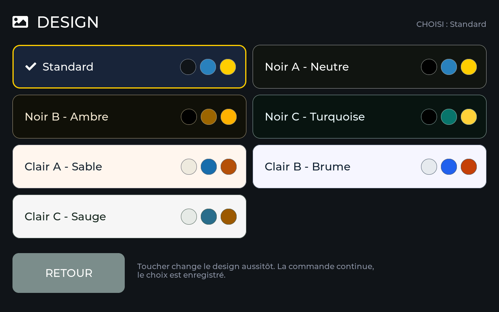
Un toucher change le design immédiatement, à l'écran et dans l'interface web. La commande continue de fonctionner pendant ce temps.
4.7 Son facultatif
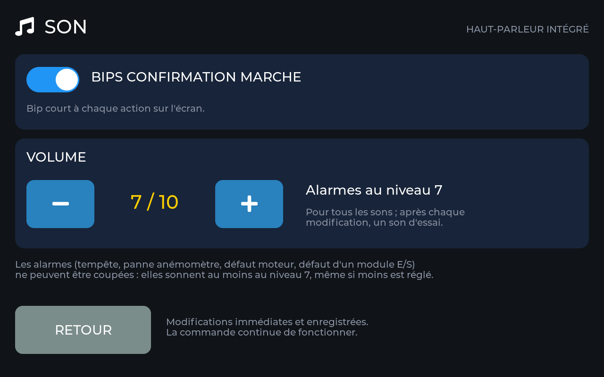
| Réglage | Réglage d'usine | Possible | Remarque |
|---|---|---|---|
| Sons de confirmation | activé | activé / désactivé | bref son à chaque manipulation de l'écran |
| Volume | 7 sur 10 | 1 à 10 | après chaque modification, un son d'essai retentit |
| Sons d'alarme | activé | seulement moins forts, jamais coupés | en cas de tempête, de panne de l'anémomètre, de défaut de vérin et de panne d'un composant ; ils retentissent toujours au moins au niveau 7 |
Les modifications s'appliquent immédiatement et restent enregistrées. Le son ne se règle qu'à l'écran.
4.8 Écran : veille, détecteur de mouvement, batterie facultatif


| Réglage | Réglage d'usine | Possible |
|---|---|---|
| Après le délai d'attente | ÉCONOMISEUR | PERMANENT · ÉCONOMISEUR · ÉCRAN ÉTEINT |
| Délai | 5 min | 1 à 60 min (touches − et +) |
| Détecteur de mouvement | activé | activé / désactivé |
| Batterie installée | oui | oui / non (affiche le niveau de charge en haut à droite du tableau de bord) |
Un mouvement devant l'écran ou un toucher le réveille ; le toucher qui réveille ne déclenche aucune commande. En cas de tempête, de panne de l'anémomètre, de défaut de vérin et de panne d'un composant, l'écran s'allume de lui-même. L'image de la caméra intégrée est seulement évaluée dans l'appareil, jamais enregistrée, affichée ou transmise.
Dans l'écran ÉCRAN, sous l'interrupteur, une ligne indique « mouvement … ». Agitez la main devant l'écran : le nombre doit augmenter. S'il fait trop sombre, il y est écrit « trop sombre ».
4.9 Firmware facultatif
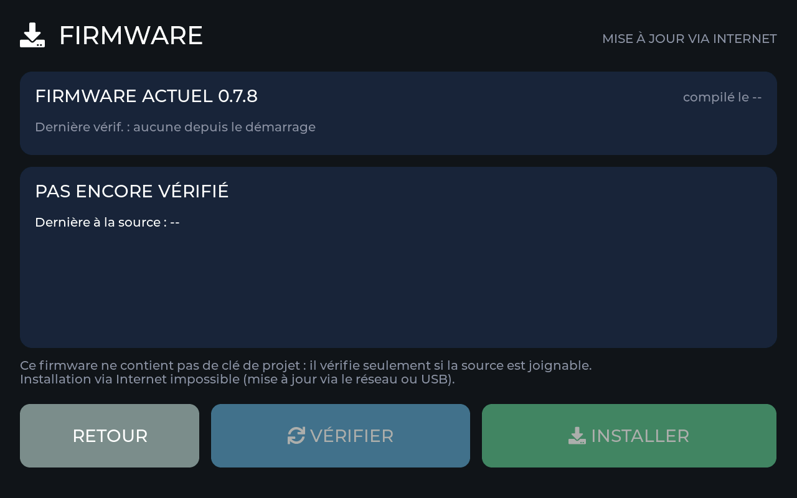
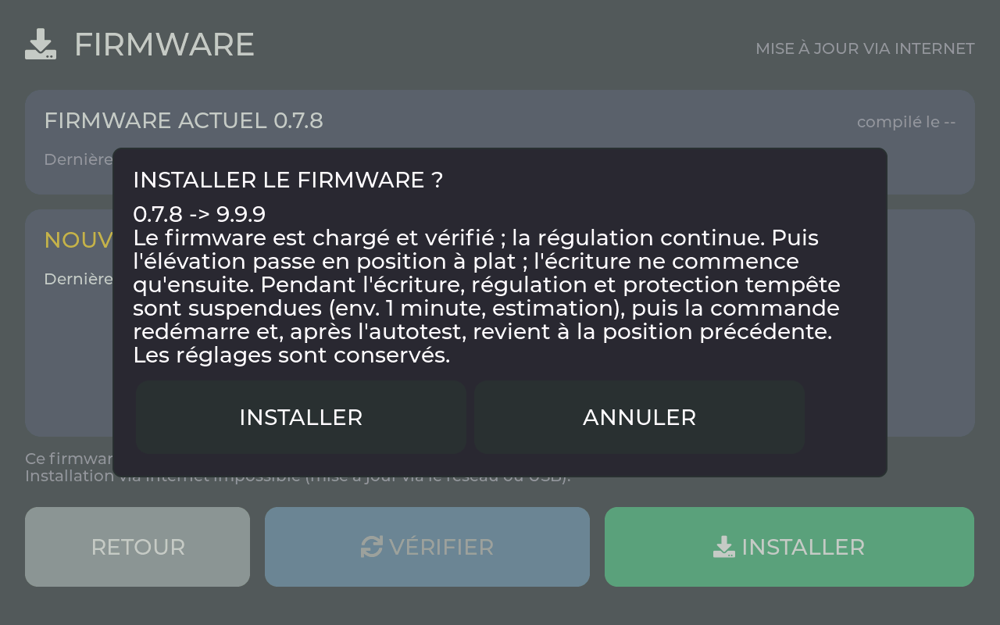
Avec le Wi-Fi, l'appareil vérifie une fois par jour s'il existe un firmware plus récent. L'installation ne se fait jamais d'elle-même, mais seulement si vous touchez INSTALLER et confirmez. Avant l'écriture, l'élévation se met à plat ; pendant l'écriture, la régulation et la protection tempête s'arrêtent brièvement. Ensuite, l'appareil redémarre et se vérifie lui-même ; si cela échoue, il revient au firmware précédent. Les réglages enregistrés sont conservés.
4.10 Simulation : essayer sans carte
La simulation permet d'essayer l'utilisation sans la carte RearCircuitBoard_10, sans vérins et sans capteurs, par exemple au bureau. L'activation n'est possible que si la carte n'est pas enfichée, et demande une confirmation. L'écran signale la simulation en permanence. Si la carte est enfichée au démarrage, une simulation enregistrée se désactive d'elle-même. Le programme de mise en route peut aussi être parcouru en simulation ; son rapport de contrôle est alors marqué « SIMULATION ».
Un programme de mise en route terminé seulement en simulation ne vaut pas pour le vrai rack. Lorsque l'appareil démarre pour la première fois avec la carte enfichée, le programme de mise en route recommence de lui-même à l'étape 1. Tant qu'il n'est pas réussi sur le vrai rack, l'automatique reste bloqué (bandeau violet « MISE EN ROUTE NON TERMINÉE ») ; la protection tempête et le parking restent actifs. Vous n'avez rien à faire pour cela, sauf parcourir le programme de mise en route sur le rack (chapitre 5).
5Le programme de mise en route
Le programme de mise en route vérifie une fois, sur le rack terminé, tout ce qui compte pour un fonctionnement sûr : carte, anémomètre, sens de déplacement, courses, capteur solaire et l'automatique. Là où une personne doit juger, il pose la question. Là où l'appareil peut mesurer lui-même, il mesure. Ce n'est que lorsque toutes les étapes obligatoires sont réussies que l'installation suit le soleil d'elle-même.
Le programme de mise en route est réalisé dans le firmware 0.7.0 et vérifié par des tests automatiques et en simulation, mais n'a encore jamais fonctionné sur un vrai rack. Il n'existe pas encore de valeurs limites pour les temps de course, les pas Hall et les angles (décision E-S3) : « réussi » signifie butée atteinte ou confirmée par vous ; les valeurs mesurées vont dans le rapport de contrôle.
5.1 Avant de commencer
- Peu de vent. En cas de tempête, chaque test de déplacement s'interrompt, et le rack se met à plat.
- La lumière du jour ou une lampe vive. Le capteur solaire et l'essai ont besoin de lumière (au moins le seuil de jour, d'usine somme 6000).
- Deux personnes valent mieux qu'une. L'une se tient à l'écran, l'autre regarde le rack. Si l'écran est loin, prenez un téléphone pour vous coordonner.
- Une vue dégagée sur le rack et sur l'anémomètre ; une échelle pour l'anémomètre s'il est placé en hauteur (ne monter sur le rack qu'avec l'alimentation du rack coupée, si vous entrez ainsi dans la zone de pivotement).
- Un téléphone avec une appli inclinomètre (niveau à bulle) pour l'étape « Aller à un angle » 1 axe et une boussole (aussi en appli) pour le lieu.
Comment il s'ouvre
- Après l'enregistrement de la configuration, il s'ouvre de lui-même.
- Si vous le quittez (CONTINUER PLUS TARD), le tableau de bord affiche en bas le bandeau violet « MISE EN ROUTE NON TERMINÉE – AUTOMATIQUE BLOQUÉ – TOUCHER ICI ». Un toucher le rouvre au même endroit.
- En outre via la roue dentée → RÉGLAGES → MISE EN SERVICE → ligne verte MISE EN ROUTE (TOUT VÉRIFIER).
- L'avancement reste enregistré, même après un redémarrage ou une coupure de courant.

Les touches du bas
| Touche | Ce qu’il fait |
|---|---|
| CONTINUER PLUS TARD | Quitte le programme de mise en route. Tout déplacement s'arrête, l'avancement est conservé. L'automatique reste bloqué. |
| ÉTAPE PRÉCÉDENTE | Revient à l'étape précédente (pas à la première étape et pas après la fin). |
| PASSER | Seulement pour les étapes facultatives : Wi-Fi et heure, lieu, voyants/son/détecteur de mouvement. Les étapes de déplacement et de sécurité ne peuvent jamais être sautées. |
| STOP (rouge) | Apparaît à chaque déplacement. Arrête immédiatement. |
| RÉPÉTER | Après une interruption ou une correction : refaire l'étape. |
Fins de course, durée maximale, temps mort et facteur de marche agissent aussi dans le programme de mise en route. Les vérins ne s'arrêtent pas pour autant si une main se trouve sur le passage. Personne dans la zone de pivotement, aucun animal non plus. Si une tempête arrive, l'étape s'interrompt et le rack se met à plat (image ci-dessous).

5.2 Les étapes en un coup d'œil
| N° | Étape | 1 axe | 2 axes | Fait bouger le rack ? |
|---|---|---|---|---|
| 1 | Sécurité | ✓ | ✓ | non |
| 2 | Données de l'installation | ✓ | ✓ | non |
| 3 | Carte et alimentation | ✓ | ✓ | non |
| 4 | Anémomètre | ✓ | ✓ | non |
| 5 | Sens de la position à plat | ✓ | ✓ | oui : brièvement, puis entièrement à plat |
| 6 | Course de l'inclinaison | ÉTALONNER LA DURÉE | entièrement raide et retour | oui : course complète |
| 7 | Rotation est – ouest | – | ✓ | oui : course complète |
| (+1) | Reset de la commande synchrone | seulement si un raccordement de reset est choisi sous « Données de l'installation » | oui : entièrement à plat | |
| 7 | Aller à un angle | ✓ | – | oui : à 30° |
| 8 | Capteur solaire | Sud, nord | Est, ouest, sud, nord | non |
| 9 | Wi-Fi et heure facultatif | ✓ | ✓ | non |
| 10 | Lieu facultatif | avec orientation | sans orientation | non |
| 11 | Voyants, son, détecteur de mouvement facultatif | ✓ | ✓ | non |
| 12 | Essai de l'automatique | Inclinaison | Inclinaison, puis rotation | oui : un peu |
| 13 | Terminé | ✓ | ✓ | non |
Les deux modes de fonctionnement comptent 13 étapes : avec 2 axes s'ajoute « Rotation est – ouest », avec 1 axe « Aller à un angle ». Si un reset de la commande synchrone est réglé (par exemple pour le Samba-Solar-Rack avec BST-KZQ-15A-2), il y en a 14, et à partir de cette étape les numéros se décalent d'un. L'en-tête affiche toujours « ÉTAPE n SUR m ».
5.3 Pas à pas
1Sécurité les deux

« Le rack va bientôt bouger. Vérifier d'abord » avec quatre points et la touche TOUT VÉRIFIÉ.
- Personne dans la zone de pivotement, aucun animal non plus.
- Pas d'échelle, pas d'outil, pas de câble sur le passage.
- Le vent est faible.
- L'alimentation du rack est allumée.
Puis TOUT VÉRIFIÉ.
L'étape 2 apparaît.
D'abord tout mettre en ordre. Cette étape ne peut pas être sautée.
2Données de l'installation les deux


Des lignes bleues avec ce qui est installé sur votre rack, chacune avec la valeur actuelle.
Toucher chaque ligne jusqu'à ce que la bonne valeur s'affiche (chaque toucher passe à la suivante). Ce que signifient les valeurs et ce qui est correct pour votre rack : fins de course, capteur Hall, structure, reset. Puis SUIVANT.
Les lignes affichent vos valeurs. L'étape 3 apparaît.
Si vous ne savez pas, laissez le réglage d'usine. Les étapes suivantes vérifient.
Samba-Solar-Rack 2.0-E Plus
Fin de course élévation : non · Capteur Hall : oui, si le HallTapBoard est installé · Structure : G2 · Reset commande synchrone élévation : J23 (carte à partir de l'ébauche 0.12, commande synchrone BST-KZQ-15A-2).
Autre rack
Fins de course : oui seulement si vos propres fins de course en bout de course sont raccordés à la carte. Structure : linéaire. Reset : arrêt, sauf si votre commande synchrone a une entrée de reset et qu'elle est raccordée.
3Carte et alimentation les deux


D'abord une explication avec VÉRIFIER, puis une image de la carte avec huit champs.
Toucher VÉRIFIER, attendre un peu.
Tous les champs verts ou gris, à droite « Tout est en ordre ». Puis SUIVANT.
Champ rouge : vérifier les connecteurs et les câbles (manuel de câblage, uniquement en allemand). Le champ devient vert de lui-même dès que l'erreur a disparu. SUIVANT ne fonctionne qu'alors.
| Champ | Ce qui est vérifié | Rouge signifie |
|---|---|---|
| 0x70 | Composant des sorties de commutation et des fins de course | la carte n'est pas bien enfichée ou est en panne ; sans lui, rien ne bouge |
| 0x71 | Composant des voyants | voyants et surveillance de l'alimentation en panne |
| 0x48 | Mesure du capteur solaire | composant en panne ou alimentation du capteur solaire surchargée (court-circuit dans le câble ?) |
| 0x49 | Mesure de l'alimentation | le second composant de mesure ne répond pas |
| 24 V | 24 V de l'alimentation | alimentation de la commande coupée ou fusible |
| 5 V | 5 V pour l'écran | le convertisseur de tension de la carte ne fournit rien |
| BATT. | Blocage de charge de la batterie et alimentation du capteur | blocage de charge non plausible (voir le manuel de montage et d'utilisation, chapitre 7) |
| 0x72 | Composant des contacts de reset (bornier J23) | gris si aucun reset n'est choisi sur J23 ; rouge s'il est choisi mais ne répond pas (carte antérieure à l'ébauche 0.12 ?) |
4Anémomètre les deux


Une hélice vue d'en haut ; en bas à droite en jaune « Vent … km/h (maximum …) ».
- Toucher START.
- Tourner vivement l'hélice à la main.
- SUIVANT.
- Seulement avec direction du vent : orienter la girouette vers le nord et regarder si l'écran indique à peu près N (0°) ; OUI ou NON.
L'affichage monte d'au moins 2 km/h quand on tourne, le texte passe à « Rotation détectée ». La direction indique à peu près le nord.
« L'anémomètre n'a pas encore été tourné. » : tourner plus vivement. Aucun nombre : l'anémomètre ne répond pas ; vérifier le câblage et les données de l'anémomètre. Direction fausse (NON) : vérifier le montage et le repère nord de l'anémomètre, puis RÉPÉTER.
5Sens de la position à plat les deux
L'étape la plus importante : elle fixe où le rack va en cas de tempête (chapitre 3).


À gauche un croquis « Voici le résultat attendu : PLUS PLAT », à droite les instructions et une grande touche PLUS PLAT.
- SUIVANT.
- Maintenir PLUS PLAT appuyée et observer le rack. Relâcher arrête immédiatement ; au bout de 5 s, il s'arrête de lui-même.
- OUI, PLUS PLAT si les panneaux se sont déplacés vers l'horizontale, sinon NON.
- Regarder jusqu'à ce que le rack s'arrête de lui-même.
Le rack devient plus plat, puis va jusqu'en butée. « La position à plat est vérifiée. Désormais la protection tempête protège le rack en toute sécurité. »
Avec NON, l'appareil inverse lui-même le sens (valeur « Position à plat côté HAUT ») : « Bien d'avoir vérifié », puis RÉPÉTER. Si rien n'a bougé : vérifier l'alimentation du rack, le câblage des contacts, la commande synchrone (mode impulsionnel ?). Si le rack est déjà entièrement à plat, l'appareil demande aussitôt s'il est à plat.
Si « Fin de course élévation installé » est sur non, la commande attend toute la durée maximale, même si le rack est déjà arrêté (butée par durée de course). Pour le Samba-Solar-Rack, cela fait 90 s. Avec capteur Hall, le déplacement se termine environ 1 s après l'arrêt des impulsions.
6Course de l'inclinaison
1 axe ÉTALONNER LA DURÉE
L'appareil mesure combien de temps il faut au rack pour aller d'entièrement à plat à entièrement raide et retour. Il en déduit plus tard chaque angle. Touchez ÉTALONNER LA DURÉE ; un écran dédié vous guide en quatre étapes (images ci-dessous). Ensuite, vous revenez et touchez SUIVANT.
2 axes entièrement raide et retour
START : le rack va entièrement raide jusqu'en butée, puis entièrement à plat jusqu'en butée. L'appareil mesure les deux durées. Ensuite, il demande si le rack est allé entièrement raide puis de nouveau entièrement à plat, sans accrocher ni heurter.


1 axe Les quatre étapes d'ÉTALONNER LA DURÉE


1 axe la touche ÉTALONNER LA DURÉE. 2 axes le temps de course qui défile, puis la question.
1 axe parcourir ÉTALONNER LA DURÉE, APPLIQUER, revenir, SUIVANT. 2 axes START, regarder, OUI ou NON.
Le rack atteint les deux butées sans accrocher ni heurter. 1 axe « Les deux durées sont plausibles » : chacune au moins 10 s, moins de 0,9 × durée maximale, HAUT et BAS au plus dans un rapport de 1 : 2.
« Le temps de course n'est pas encore étalonné. » : étalonner d'abord. Interruption « DURÉE MAX. TROP COURTE OU ARRIVÉ NON TOUCHÉ » : augmenter la durée maximale. NON avec 2 axes : vérifier la mécanique et le vérin (manuel de montage du rack), puis RÉPÉTER.
Si « Capteur Hall présent » est sur oui, la ligne s'appelle « ÉTALONNER : DURÉE ET PAS HALL ». Les courses de mesure se terminent alors d'elles-mêmes et comptent les pas Hall ; sont plausibles au moins 1000 pas chacune, HAUT et BAS au plus 3 % d'écart. Si le refus indique « HALL COMPTE À REBOURS », mettez « Inverser le sens de comptage Hall » sur oui.
7Rotation est – ouest 2 axes


À gauche une vue de dessus avec boussole (jaune : orientation), à droite les instructions et la touche EST.
- SUIVANT, puis maintenir EST appuyée (5 s au maximum).
- OUI, VERS L'EST si le rack a tourné vers le soleil du matin.
- Regarder : le rack tourne entièrement vers l'est, entièrement vers l'ouest et revient vers l'est.
Les trois déplacements atteignent leur butée. « Rotation vérifiée. Le rack est en position du matin. »
NON : cela ne peut pas être inversé par un réglage. Couper l'alimentation, échanger les connecteurs de J5 et J6 (manuel de câblage, uniquement en allemand), rallumer, RÉPÉTER. Aucun mouvement : vérifier l'alimentation et le câblage du vérin d'azimut.
+Reset de la commande synchrone seulement si réglé
Cette étape n'existe que si un raccordement de reset est choisi à l'étape 2. Elle vient après la course (avec 2 axes, après la rotation). Il n'existe pas encore d'image dédiée ; le bandeau du tableau de bord montre le déroulement comme pour le reset via RÉGLAGES.

« La commande synchrone des vérins a une entrée de reset. L'appareil va la déclencher. » et la touche DÉCLENCHER LE RESET.
DÉCLENCHER LE RESET, regarder. Avec 2 axes et deux resets, les deux se déroulent l'un après l'autre.
La commande synchrone rentre entièrement les vérins (sur le rack : à plat). « Reset vérifié. »
« Réinit. impossible (vérifier raccord ou composant). » : il n'a pas commencé dans les 20 s ; vérifier le bornier J23 ou J5 et la valeur reset. « RESET INTERROMPU » : la cause figure dans la barre d'état ; ensuite RÉPÉTER.
La durée de l'impulsion de reset (5 s) et le comportement de la commande synchrone ensuite ne sont pas encore mesurés sur le rack.
7Aller à un angle 1 axe


« Le rack va maintenant à 30 degrés. » et la touche ALLER À 30 DEGRÉS.
Toucher la touche, attendre. Puis poser le téléphone à plat sur un panneau, lire l'angle, le saisir (0 à 90), coche.
Le rack s'arrête à environ 30°. « Angle noté. Il figure dans le rapport de contrôle. »
« Angle inaccessible (temps de course ou capteur Hall). » : répéter l'étape 6. Si votre valeur s'écarte beaucoup : vérifier la structure. Il n'existe pas encore de limite à partir de laquelle l'étape échoue.
8Capteur solaire


Le capteur vu d'en haut avec quatre champs. Le côté que vous devez ombrer est marqué.
START. Puis ombrer le côté indiqué, attendre que l'appareil le reconnaisse, retirer la main. 1 axe SUD, puis NORD. 2 axes EST, OUEST, SUD, NORD.
Chaque côté devient au moins 25 % plus sombre et est reconnu pendant 1 s. « Tous les côtés du capteur sont bien attribués. »
Si l'appareil reconnaît un autre côté, il corrige lui-même l'attribution des entrées et le compte dans le rapport de contrôle. « Trop sombre » : répéter à la lumière du jour ou avec une lampe vive. Rien n'est reconnu : agrandir l'ombre, s'approcher du capteur.
9Wi-Fi et heure facultatif

Une explication, la touche RÉSEAU … et SUIVANT.
RÉSEAU … ouvre l'écran du chapitre 4.4. Après le redémarrage, le programme de mise en route se rouvre à cet endroit. Ou PASSER.
« L'heure est réglée », puis SUIVANT.
« Pas encore d'heure : configurer le WiFi ou passer. » Sans Wi-Fi, l'appareil reconnaît la nuit à la luminosité.
10Lieu facultatif

1 axe « Où se trouve le rack, et vers où est-il tourné ? » 2 axes « Où se trouve le rack ? » et la touche LIEU ….
LIEU … ouvre la carte (chapitre 6.2) ; avec 1 axe, ensuite aussi l'orientation. Ou PASSER.
En bas « Lieu … » avec latitude et longitude, puis SUIVANT.
« Pas encore de lieu : le saisir ou passer. »
11Voyants, son, détecteur de mouvement facultatif


Trois questions l'une après l'autre : voyants, son, détecteur de mouvement.
START, puis à chaque fois OUI ou NON. Ou PASSER.
BEREIT (PRÊT) et FAIL s'allument sur le boîtier et sur la carte ; le son est audible ; quand on agite la main, « MOUVEMENT DÉTECTÉ » s'affiche.
NON est noté dans le rapport de contrôle, l'étape continue quand même. Voyants : vérifier le raccordement des voyants du boîtier (manuel de câblage, uniquement en allemand). Son : volume. Mouvement : assez de lumière devant l'écran ?
12Essai de l'automatique


Une explication, puis « Décale un peu le rack … », puis l'automatique en marche avec l'écart en pour cent.
START, regarder, OUI ou NON. 2 axes d'abord l'inclinaison, puis la rotation.
L'appareil décale l'axe pendant environ 4 s, puis l'automatique revient vers le soleil et s'arrête. « L'essai est réussi. »
Si l'automatique s'éloigne du soleil, l'appareil inverse lui-même le sens (« Le sens a été inversé. Merci de réessayer. ») : pour l'inclinaison « Nord plus clair = HAUT », pour la rotation il échange les entrées est et ouest. « L'automatique n'a pas aligné. Assez de soleil ? » : après 3 min sans succès ; répéter au soleil.
13Terminé

Une coche verte, AU TABLEAU DE BORD et la touche TOUT REVÉRIFIER.
AU TABLEAU DE BORD. Activer l'interrupteur de l'automatique en haut s'il est désactivé.
Le bandeau violet a disparu. La barre d'état affiche l'automatique (par exemple « AUTO : ALIGNÉ »).
Une étape obligatoire manque encore : « Cette étape manque encore. » Revenir à cette étape.
5.4 Après la fin
- Rapport de contrôle : l'appareil enregistre les trois derniers rapports. Dans l'interface web sous PARAMÈTRES → PROGRAMME DE MISE EN ROUTE, AFFICHER montre le rapport sous forme de page mise en forme (claire pour l'imprimante, sombre pour un fichier) avec la touche ENREGISTRER EN PDF ; TEXTE le télécharge en fichier texte (depuis le firmware 0.7.6, rapports plus anciens en texte seulement). Il contient la date, le firmware, le mode de fonctionnement, l'anémomètre, chaque étape avec son résultat et les valeurs mesurées (temps de course, pas Hall, angle lu, attribution du capteur solaire, réponses sur les voyants, le son et le détecteur de mouvement). Conservez-le : il aide lors de contrôles et de questions ultérieurs.
- Les valeurs individuelles restent modifiables sous RÉGLAGES (chapitre 7) ; ÉTALONNER LA DURÉE peut y être répété à tout moment 1 axe.
- Tout revérifier : après le remplacement d'une pièce (vérin, capteur, anémomètre, carte) ou après un changement de mode de fonctionnement : RÉGLAGES → MISE EN SERVICE → MISE EN ROUTE (TOUT VÉRIFIER) ouvre l'écran « Terminé » ; là, TOUT REVÉRIFIER et, dans la confirmation, RECOMMENCER. Le programme commence à l'étape 1. Tant que toutes les étapes ne sont pas de nouveau réussies, l'automatique est bloqué ; la protection tempête et le parking restent actifs. Le rapport de contrôle précédent reste enregistré. Un programme de mise en route terminé seulement en simulation recommence de lui-même sur le vrai rack (4.10).
6Lieu, orientation, soleil et nuit
Si l'appareil connaît l'heure (via le Wi-Fi) et le lieu, il calcule la course du soleil : lever, coucher, hauteur et direction du soleil. Il passe ainsi à l'heure en position de nuit. Le jour, c'est toujours le capteur solaire qui assure le suivi.
Le calcul de la position du soleil est testé avec des valeurs de comparaison d'une bibliothèque astronomique. Il n'est pas encore éprouvé sur l'appareil avec une heure réelle et un vrai rack.
6.1 La page SOLEIL
Dans le tableau de bord, la carte CAPT. SOLAIRE comporte en haut un petit champ jaune avec le lever et le coucher, par exemple « ↑ 04:50 ↓ 21:23 ». Un toucher ouvre la page SOLEIL. À l'ouverture, le soleil parcourt dans une courte animation le chemin du lever jusqu'à sa position actuelle.


| Indication | Signification |
|---|---|
| Ligne orange | Chemin du soleil aujourd'hui dans le ciel, du nord-est au nord-ouest en passant par le sud (en été). Point jaune : le soleil maintenant. |
| MIDI | Heure et hauteur de la position la plus haute du soleil. |
| HAUTEUR DU SOLEIL, DIRECTION | À quelle hauteur (en degrés au-dessus de l'horizon) et dans quelle direction se trouve le soleil maintenant. |
| LEVER / COUCHER | Aujourd'hui, pour votre lieu. |
| NUIT DÈS, JOUR DÈS | Quand l'appareil passe en position de nuit et quand le jour commence (avec les décalages du 6.4). |
| MEILLEURE INCLINAISON 1 axe | Quelle inclinaison capte maintenant le plus de soleil, compte tenu de l'orientation du rack. |
| LE RACK REGARDE 1 axe | L'orientation réglée (6.3). |
| LA NUIT 2 axes | Position de nuit : « À PLAT, PUIS VERS L'EST » ou seulement à plat. La touche LA NUIT VERS L'EST bascule. |
6.2 Saisir le lieu
Vous accédez au lieu par la touche LIEU … sur la page SOLEIL ou dans le programme de mise en route (étape 10). Pour la position du soleil, une précision d'environ 0,1° (environ 10 km) suffit : la localité la plus proche convient.


- Chercher un lieu ou toucher la carteDans le champ CHERCHER UN LIEU, taper les premières lettres de votre localité et toucher une suggestion. Ou agrandir la carte avec + et −, la déplacer du doigt et toucher votre localité. Résultat : la latitude et la longitude figurent dans les champs.
- Vérifier ou saisir les nombresSi vous connaissez les coordonnées (par exemple d'une appli de cartes), saisissez-les directement : LATITUDE (NORD +), LONGITUDE (EST +), en degrés décimaux avec un point, par exemple 51.0504 et 13.7373. Au sud de l'équateur, la latitude est négative, à l'ouest de Greenwich, la longitude. Résultat : les nombres sont corrects.
- APPLIQUERRésultat : le point rouge est sur votre localité ; la page SOLEIL affiche les heures pour votre lieu.
D'usine, les deux sont à 0. EFFACER remet le lieu à « non saisi ». La carte de l'écran est enregistrée dans l'appareil et n'a pas besoin d'Internet (contours de Natural Earth, localités de GeoNames). Dans l'interface web, il existe en plus une carte routière (chapitre 8).
6.3 Orientation du rack 1 axe
Un rack à un axe ne peut pas tourner. S'il n'est pas orienté plein sud, le soleil se trouve « devant » le rack à d'autres heures. Pour que l'appareil calcule correctement, vous lui indiquez vers où votre rack est tourné. Avec deux axes, cette valeur n'existe pas, car l'azimut suit de toute façon le soleil.

- Mesurer la directionAvec un compas (une application de téléphone suffit), mesurez derrière le rack dans la direction des panneaux. Ne tenez pas le compas contre le métal. Résultat : une direction cardinale, par exemple 195° (sud-sud-ouest).
- Convertir en valeurValeur = direction du compas − 180. Exemple : 195° − 180 = +15. Pour 165° (sud-sud-est), on obtient −15. Résultat : un nombre entre −90 et +90.
- RéglerPage SOLEIL → ORIENTATION DU RACK …, régler avec 5° EST, 1° EST, 1° OUEST, 5° OUEST, puis APPLIQUER. Résultat : la page SOLEIL affiche « LE RACK REGARDE 15° VERS L'OUEST ».
La valeur dépend uniquement de la façon dont vous avez installé le rack. Il n'existe pas de préréglage pour le rack autre que 0 (plein sud). Quelques degrés d'écart du compas sont sans importance.
Si l'heure ou le lieu manquent


La commande fonctionne tout de même entièrement : elle reconnaît alors la nuit à la luminosité, et le suivi suit comme toujours le capteur solaire.
6.4 Nuit et position de nuit
| Ce que l'appareil connaît | Début de la nuit | Début du jour |
|---|---|---|
| Heure et lieu | Coucher du soleil + « Nuit dès coucher du soleil plus » (usine 30 min), sans délai | Lever du soleil − « Jour dès lever du soleil moins » (usine 0 min) |
| Heure ou lieu manquant | Luminosité (somme des quatre faces) pendant « Nuit ou jour seulement après » (usine 5 min) sous « Nuit sous luminosité » (usine 4000) | aussi longtemps au-dessus de « Jour dès luminosité » (usine 6000) |
1 axe Position de nuit
L'élévation se met à plat (position 0) et y reste jusqu'au matin.
2 axes Position de nuit
L'élévation se met d'abord à plat, puis l'azimut tourne vers l'est (position du matin) si « La nuit, retour à l'est » est activé (activé en usine). Sinon, l'azimut reste en place. Les deux axes ne bougent jamais en même temps.
La course de nuit est une course normale avec toutes les fonctions de protection ; elle attend par exemple la fin d'une pause du facteur de marche. La tempête, le parking et le mode manuel sont prioritaires.
6.5 Par temps couvert, aller à l'angle calculé 1 axe désactivé en usine
Par temps très couvert, le capteur solaire ne voit aucune direction. Si cet interrupteur est activé, l'élévation va alors au meilleur angle calculé (comme pour l'inclinaison sur ordre), et le bandeau d'état affiche « COUVERT : … ». Conditions : heure, lieu et une durée de course étalonnée. « Couvert » signifie : la somme de la luminosité reste 5 min sous « Couvert sous luminosité » (usine 20000) ; le temps redevient ensoleillé au-dessus de 1,25 fois cette valeur. L'appareil ne va à un nouvel angle que s'il s'écarte d'au moins 3° de l'ancien.
Le seuil de 20000 est estimé. Par une journée couverte, observez la luminosité dans la carte CAPT. SOLAIRE (somme des quatre valeurs) et réglez le seuil un peu au-dessus (chapitre 7).
7Toutes les valeurs réglables
La partie de référence : chaque valeur sous RÉGLAGES avec sa signification, son préréglage, ses limites et le moment où elle s'applique. Avec, pour chacune, une recommandation pour le Samba-Solar-Rack et une méthode pour trouver la bonne valeur sur une autre installation. Toutes les valeurs d'un coup d'œil : annexe A.
Les recommandations pour le rack proviennent de la description du projet (README) et concernent le rack 2.0-E Plus avec la commande synchrone BST-KZQ-15A-2 et sans fin de course sur le tracker. Elles sont à vérifier par rapport à la version actuelle du manuel de montage sur le site web. Là où une indication manque, il est écrit « mesurer sur votre rack » ou « préréglage » ; les dimensions et les durées ne sont pas estimées ici.
Modifier une valeur
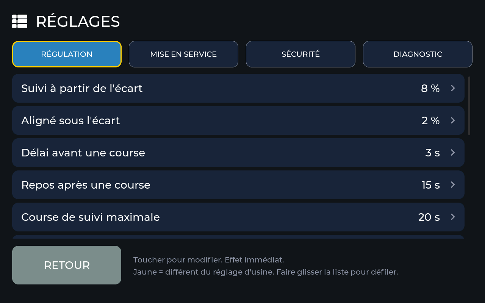

- Roue dentée → RÉGLAGES …La touche n'existe que lorsque la configuration est enregistrée. Résultat : la liste du groupe RÉGULATION apparaît.
- Choisir le groupeRÉGULATION, MISE EN SERVICE, SÉCURITÉ ou DIAGNOSTIC. Faites glisser la liste pour la parcourir. Résultat : les valeurs du groupe s'affichent ; celles écrites en jaune diffèrent du préréglage.
- Toucher la ligne, régler la valeur, appliquerRésultat : la ligne affiche la nouvelle valeur. Si elle est hors limites ou ne convient pas à une autre valeur, l'appareil la refuse et indique pourquoi.
| « S'applique » | Signification |
|---|---|
| immédiatement | La nouvelle valeur agit au prochain pas de régulation. |
| seulement moteurs à l'arrêt | La modification est refusée tant qu'un moteur est en marche. Attendez un peu ou attendez la fin de PARQUER À PLAT, puis réessayez. |
| à l'écran immédiatement ; à distance seulement après confirmation | Si la valeur vient du navigateur ou d'ioBroker, l'écran affiche une demande de confirmation avec l'ancienne et la nouvelle valeur. Seul APPLIQUER la rend valable. Les propositions ne survivent pas à un redémarrage. |
Seule une partie des valeurs apparaît sur chaque installation : les valeurs de l'azimut seulement avec 2 axes ; durées de course, structure, capteur Hall, angles favoris, orientation et temps couvert seulement avec 1 axe ; les valeurs de direction du vent seulement avec un anémomètre à direction. Les marques l'indiquent.
SÉCURITÉ
Les valeurs de sécurité protègent la mécanique et les moteurs. Leurs limites sont fixes. Modifiée à distance, une nouvelle valeur ne s'applique que lorsque vous la confirmez à l'écran (l'écran affiche l'ancienne et la nouvelle valeur).
Seuil de tempête (rafale) les deux stormKmh
À partir de cette vitesse de vent, le rack se met à plat. On mesure la rafale : la moyenne sur 3 secondes.
Maintien après tempête les deux stormHoldMs
Durée pendant laquelle le rack reste à plat après la dernière rafale au-dessus du seuil de tempête. Chaque nouvelle rafale relance le décompte.
Temps mort à l'inversion les deux motorDeadtimeMs
Pause avant qu'un moteur puisse changer de sens. Ménage le moteur et le réducteur.
Durée max. élévation les deux motorMaxRunMsElevation
Course la plus longue permise d'une traite. Avec fins de course : si elle est dépassée, la commande signale un défaut moteur. Sans fins de course : à son expiration, la butée est considérée comme atteinte (butée par durée).
Durée max. azimut 2 axes motorMaxRunMsAzimuth
Comme ci-dessus, pour la rotation est – ouest.
MISE EN SERVICE
Ce qui est installé sur votre rack et comment. Le programme de mise en route règle lui-même la plupart de ces valeurs. Les valeurs « seulement moteurs à l'arrêt » sont refusées par l'appareil tant qu'un moteur est en marche.
Fin de course élévation installé les deux limitSwitchesElevation
Oui : des fins de course (contacts à ouverture) pour les deux extrémités de l'inclinaison sont raccordés à la carte. Non : le moteur s'arrête sur sa propre fin de course intégrée ; la commande reconnaît la fin grâce à la durée maximale.
Fin de course azimut installé 2 axes limitSwitchesAzimuth
Comme ci-dessus, pour la rotation.
Capteur solaire EST / OUEST / SUD / NORD sur l'entrée AIN les deux sunChEast, sunChWest, sunChSouth, sunChNorth
Quel conducteur du capteur solaire est sur quelle entrée. Si une face reçoit une entrée déjà attribuée à une autre, les deux sont échangées.
Nord plus clair = HAUT les deux sunNorthMeansUp
Détermine dans quel sens l'inclinaison se déplace lorsque la face NORD du capteur est plus claire que la face SUD. Dépend du montage du capteur (hypothèse d'usine : NORD est orienté vers le bord supérieur du module).
Position à plat côté HAUT les deux stormParkElevationPlus
Dans quel sens (contact HAUT ou BAS) le rack devient plat. Détermine la course en cas de tempête, de parking et de nuit, et quelle borne commutent les touches PLUS RAIDE et PLUS PLAT.
Anémomètre : débit (Baud) les deux windBaud
Vitesse de transmission sur la ligne RS485 (8 bits de données, pas de parité, 1 bit d'arrêt).
Anémomètre : adresse Modbus les deux windSpeedAddr
Adresse du capteur de vitesse du vent sur le bus.
Anémomètre : commande lecture (3 ou 4) les deux windSpeedFunction
Commande Modbus de lecture : 3 (Holding Register) ou 4 (Input Register).
Anémomètre : registre les deux windSpeedRegister
Numéro du registre qui contient la vitesse du vent.
Anémomètre : m/s par unité les deux windSpeedScale
Conversion de la valeur brute en m/s. 0,1 signifie : le capteur fournit des dixièmes de m/s (valeur brute 86 = 8,6 m/s).
Direction du vent : adresse Modbus, commande lecture, registre, degrés par unité les deux windDirAddr, windDirFunction, windDirRegister, windDirScale
Les mêmes indications pour le capteur de direction (seulement avec un anémomètre à direction du vent). 0,1 degré par unité : valeur brute 0 à 3600 = 0° à 360°.
Durée de course 0 à 60° (plus raide) / 60 à 0° (plus plat) 1 axe elevTravelSteepMs, elevTravelFlatMs
Le temps dont l'inclinaison a besoin sur toute la course. L'appareil en déduit chaque angle par estimation (inclinaison sur ordre). Valable seulement si elle est plus courte que 0,9 × durée maximale.
Structure (inclinaison/course) 1 axe elevGeometry
Comment la course du moteur est convertie en angle. G1 et G2 sont les tableaux des Samba-Solar-Racks (manuel de montage, annexe 16.1).
Perte au démarrage par course 1 axe elevStartLossMs
Temps que chaque moteur perd au démarrage et à l'arrêt. Améliore l'estimation lors de nombreuses courses courtes.
Capteur Hall présent 1 axe elevHall
Oui : le HallTapBoard transmet les impulsions du moteur à la carte (entrée J22). L'appareil mesure alors l'inclinaison au lieu de l'estimer, et détecte si le moteur roule vraiment. Avec deux axes, il reste désactivé.
Inverser le sens de comptage Hall 1 axe elevHallInvert
Inverse le sens de comptage lorsque les canaux A et B sont raccordés dans l'autre sens.
Pas Hall par course 1 axe elevHallSteps
Nombre de pas Hall que le moteur compte sur toute la course. Saisi par l'étalonnage (moyenne de HAUT et BAS).
Reset commande synchrone élévation les deux syncResetElevation
Si et où l'entrée de reset (RST) d'une commande synchrone est raccordée. Certaines commandes synchrones se bloquent après une coupure de courant pendant une course, jusqu'à ce que RST soit brièvement relié à COM ; elles rentrent alors complètement les moteurs.
Reset commande synchrone azimut 2 axes syncResetAzimuth
Comme ci-dessus, pour la rotation (borne J23, pôles 3–4).
Lieu : latitude (nord positif) / longitude (est positif) les deux siteLatitude, siteLongitude
L'emplacement du rack. Pour le lever et le coucher du soleil. Le plus simple est de passer par la carte (chapitre 6.2).
Orientation du rack (sud 0, ouest positif) 1 axe rackAzimuth
La direction vers laquelle regardent les panneaux (chapitre 6.3).
RÉGULATION
Comment l'automatique effectue le suivi et quand il fait nuit. Toutes les valeurs s'appliquent immédiatement.
Suivi à partir de l'écart les deux trackStartPermille
Une course de suivi ne commence que lorsque le capteur solaire voit entre deux faces une différence supérieure à cette valeur.
Aligné sous l'écart les deux trackStopPermille
Sous cette différence, l'axe est considéré comme aligné et la course s'arrête.
Délai avant une course les deux trackStartDelayMs
Durée pendant laquelle l'écart doit persister avant une course. Évite les courses dues à un bref nuage.
Repos après une course les deux trackSettleMs
Pause après chaque course de suivi.
Course de suivi maximale les deux trackMaxMoveMs
Une course de suivi individuelle se termine au plus tard après ce temps.
Nuit sous luminosité (somme) les deux nightEnterLevel
Seulement sans heure ni lieu : si la somme des quatre luminosités reste assez longtemps sous cette valeur, il fait nuit.
Jour dès luminosité (somme) les deux nightExitLevel
Au-dessus de cette valeur, il fait de nouveau jour. Vaut aussi comme luminosité minimale pour le capteur solaire et l'essai dans le programme de mise en route.
Nuit ou jour seulement après les deux nightDelayMs
Durée pendant laquelle la luminosité doit rester sous ou au-dessus du seuil. Vaut aussi pour « couvert ».
La nuit, retour à l'est 2 axes nightReturnEast
Oui : la nuit, après la mise à plat, l'azimut tourne vers l'est pour que l'installation soit prête le matin.
Nuit dès coucher du soleil plus les deux nightAfterSunsetMin
Avec heure et lieu : la nuit commence ce nombre de minutes après le coucher du soleil.
Jour dès lever du soleil moins les deux dayBeforeSunriseMin
La nuit se termine ce nombre de minutes avant le lever du soleil.
Par temps couvert, aller à l'angle calculé 1 axe cloudAstro
Par temps couvert, l'inclinaison va au meilleur angle calculé (chapitre 6.5).
Couvert sous luminosité (somme) 1 axe cloudLevel
Sous cette somme, le temps est considéré comme couvert (hypothèse, à régler sur l'appareil).
Angle favori 1 / angle favori 2 1 axe elevPreset1, elevPreset2
Jusqu'à deux angles personnels comme touches supplémentaires dans la carte INCLINAISON (à côté de 0°, 30°, 60°).
DIAGNOSTIC
Seulement pour le dépannage.
Niveau de log (0 arrêt, 5 tout) les deux logLevel
Niveau de détail du journal de l'appareil (0 arrêt, 1 erreurs, 2 avertissements, 3 info, 4 debug, 5 tout).
Valeurs fixes que vous ne pouvez pas régler
Quelques valeurs de protection sont fixées dans le firmware. Il est bon de les connaître, car elles expliquent pourquoi le rack attend parfois.
| Protection | Valeur | Ce que vous remarquez |
|---|---|---|
| Facteur de marche : course d'une traite | au plus 120 s | Quand le compte de durée de course d'un moteur est vide, une pause commence. Le bandeau d'état affiche en orange « PAUSE FACTEUR DE MARCHE : MOTEUR LIBRE DANS mm:ss ». Après une vidange complète, elle dure environ 13,5 min. Seules la mise à plat en cas de tempête, de panne de l'anémomètre et le parking s'effectuent quand même. |
| Facteur de marche : proportion | 10 % ; de nouveau libre à partir de 90 s de compte accumulé (hypothèse) | |
| Nouvelle mise à plat en cas de tempête (sans fin de course) | toutes les 30 min | En cas de tempête et de panne de l'anémomètre, l'élévation se remet régulièrement à plat, au cas où une course précédente serait restée sans effet. |
| Course d'essai dans le programme de mise en route | au plus 5 s | La course d'essai PLUS PLAT ou EST s'arrête d'elle-même. |
Les valeurs du facteur de marche sont des indications du revendeur pour les moteurs du Samba-Solar-Rack (facteur de marche 10 %, 120 s d'une traite). D'autres moteurs peuvent supporter plus ou moins ; ce n'est pas réglable dans le firmware 0.7.0.
8Interface web : régler à distance
Lorsque le Wi-Fi est connecté, vous pouvez afficher, commander et régler l'installation dans le navigateur d'un téléphone ou d'un PC. La page ressemble à l'écran. L'écran reste toutefois l'appareil principal : tout ce qui existe à distance existe aussi à l'écran, et certaines choses n'existent que là.
L'affichage et la mise à jour par le réseau ont été essayés sur la carte de test (en simulation, sans carte RearCircuitBoard_10). La commande et le réglage à distance n'y ont pas encore été essayés ; la carte du lieu, le soleil et le rapport de vérification sont nouveaux dans la 0.7.0 et vérifiés seulement sur PC.
Ouvrir et se connecter
- Ouvrir l'adresseDans le même Wi-Fi, saisissez dans le navigateur l'adresse affichée sur l'écran RÉSEAU, ou
http://samba-solar-track.local. Résultat : la vue d'ensemble apparaît ; sans connexion, « AFFICHAGE SEUL » est indiqué en haut. - Se connecterSur le téléphone, scannez le QR code sous RÉSEAU → ACCÈS DISTANT. Sur le PC, SAISIR LE TOKEN et tapez les quatre blocs du token affichés sur l'écran RÉSEAU. Résultat : le navigateur peut commander et régler ; il mémorise la connexion.
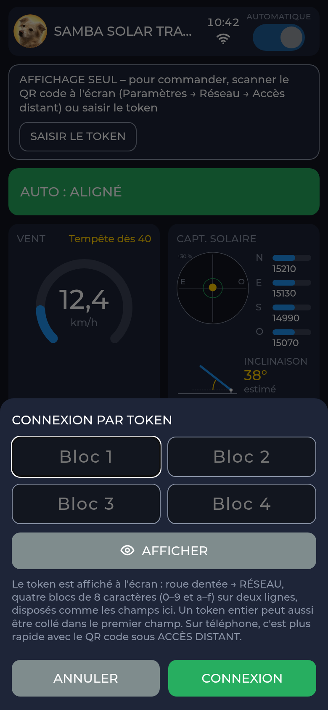
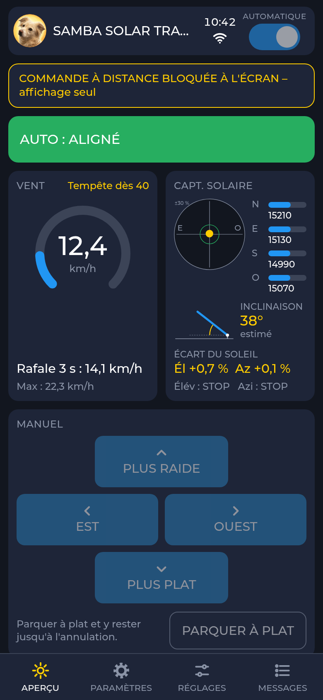


Ce qui fonctionne à distance
| Page | Réglage | Effet |
|---|---|---|
| PARAMÈTRES | Langue, design | immédiatement, à l'écran et dans le navigateur ; seulement tant que le tableau de bord est ouvert à l'écran |
| PARAMÈTRES | Mode, anémomètre | comme ENREGISTRER à l'écran : les moteurs s'arrêtent, redémarrage après 1,5 s |
| PARAMÈTRES | Lieu (carte), orientation du rack 1 axe | immédiatement |
| PARAMÈTRES | Programme de mise en route : état et rapports de vérification (chacun AFFICHER, enregistrer en PDF, et TEXTE) | seulement afficher, enregistrer et télécharger |
| PARAMÈTRES | Installer un firmware ou l'installer depuis Internet ; quitter la simulation | avec token ; pas pendant une tempête et pas tant qu'un moteur est en marche |
| RÉGLAGES | toutes les valeurs du chapitre 7 | Régulation et mise en service immédiatement ou à l'arrêt ; valeurs de sécurité, sens de la position à plat et données de vitesse du vent seulement après confirmation à l'écran |
| RÉGLAGES | RÉINITIALISER LA COMMANDE SYNCHRONE | avec demande de confirmation dans le navigateur |
Lieu et orientation dans le navigateur
Le navigateur propose une carte routière (Leaflet avec des cartes d'OpenStreetMap) et une recherche de lieu (Nominatim). C'est votre navigateur qui charge les images de carte depuis Internet, pas l'appareil ; sans Internet, les champs numériques fonctionnent quand même.


Ce qui ne fonctionne qu'à l'écran, et pourquoi
| Seulement à l'écran | Pourquoi |
|---|---|
| Dérouler le programme de mise en route | À chaque course de vérification, quelqu'un doit se tenir près du rack et regarder. Le navigateur n'affiche que la progression. |
| ÉTALONNER LA DURÉE 1 axe | Même raison : vous touchez ARRIVÉ quand le cadre s'arrête. Pendant l'étalonnage, l'appareil refuse les courses manuelles à distance. |
| Confirmer des valeurs de sécurité | Une valeur qui protège la mécanique ne doit pas être modifiée à distance sans qu'on le remarque. |
| Nom et mot de passe Wi-Fi | Sans Wi-Fi, pas de navigateur. En alternative, via le hotspot de configuration (4.4). |
| QR code, afficher le token, RENOUVELER TOKEN, bloquer la COMMANDE DISTANTE | Celui qui est devant l'appareil décide qui peut commander à distance. |
| Activer la simulation | Nécessite une confirmation sur l'appareil et ne fonctionne que sans carte RearCircuitBoard_10. |
| Son, écran (veille, détecteur de mouvement, batterie) | Ne concerne que l'appareil lui-même. |
Bloqué, l'appareil n'accepte à distance aucune commande, aucune modification et aucune mise à jour du firmware. Les affichages et les messages continuent. La protection tempête, les fins de course, le temps mort et la surveillance de la durée de course ne peuvent jamais être levés à distance.
9Dépannage lors de la configuration
Les messages et observations les plus fréquents lors de la configuration, avec cause et solution. Les erreurs de câblage sont traitées dans le manuel de câblage (uniquement en allemand), les erreurs de la carte dans le manuel de montage et d'utilisation.
| Affichage ou observation | Cause | Solution |
|---|---|---|
| Tout est en anglais | En usine, la langue est l'anglais. | Dans le choix de la langue, touchez FRANÇAIS (4.1). |
| Impossible de toucher ENREG. + REDÉMARRER | Mode ou anémomètre non choisi. | Choisir les deux. |
| La touche RÉGLAGES manque | Configuration pas encore enregistrée. | D'abord ENREG. + REDÉMARRER. |
| PRÊT clignote, rien ne bouge | Configuration manquante. | Enregistrer la configuration. |
| Bandeau violet « PROGRAMME DE MISE EN ROUTE MANQUANT : AUTOMATIQUE BLOQUÉ » | Programme de mise en route non terminé. | Toucher le bandeau et continuer (chapitre 5). |
| Après avoir enfiché la carte : bandeau violet « PROGRAMME DE MISE EN ROUTE MANQUANT », alors que le programme de mise en route était terminé | Il n'a été terminé qu'en simulation. Sur le vrai rack, il recommence alors de lui-même. | Voulu. Dérouler le programme de mise en route sur le rack (chapitre 5). |
| « SIMULATION IMPOSSIBLE » | La carte RearCircuitBoard_10 est enfichée. | Avec la carte, il n'y a pas de simulation ; c'est voulu. |
| Étape 3 : champ 0x70 rouge | Carte mal enfichée, composant en défaut. | Couper l'alimentation, vérifier la carte sur le connecteur femelle J8. Sans 0x70, rien ne bouge. |
| Étape 3 : 24 V ou 5 V rouge | Alimentation de la commande coupée, fusible, convertisseur. | Vérifier l'alimentation et le fusible (manuel de câblage, uniquement en allemand). |
| Étape 3 : BATT. rouge | Blocage de charge non plausible. | Manuel de montage et d'utilisation, chapitre 7. |
| Étape 3 : 0x72 rouge | Reset sur J23 choisi, le composant ne répond pas (carte antérieure à l'ébauche 0.12 ?). | À l'étape 2, régler le reset sur « arrêt » ou vérifier la carte. |
| « L'anémomètre n'a pas encore été tourné. » | L'affichage a augmenté de moins de 2 km/h, ou l'anémomètre ne répond pas. | Tourner plus fort. S'il ne répond pas : ligne RS485 (A/B inversés ?), alimentation, adresse et débit. |
| La direction du vent n'indique pas le nord | Capteur monté de travers ou valeurs fausses. | Aligner le repère nord du capteur, vérifier les valeurs de direction du vent, RÉPÉTER. |
| Avec PLUS PLAT, le rack est devenu plus raide | Sens de la position à plat inversé. | Toucher NON : l'appareil inverse. RÉPÉTER. |
| Avec PLUS PLAT, rien ne bouge | Alimentation des moteurs coupée, contacts non raccordés, commande synchrone pas en mode impulsionnel ou bloquée (par exemple après une coupure de courant). | Vérifier le câblage ; pour une commande synchrone avec reset : régler le reset et le déclencher. |
| « Défaut moteur (durée max.). Acquitter et répéter. » | Avec « Fin de course installé = oui », la fin de course n'est pas arrivée avant l'expiration de la durée maximale. | Fins de course présentes ? Sinon, régler sur non. Sinon, augmenter la durée maximale. ACQUITTER, RÉPÉTER. |
| Les deux sens bloqués, rien ne bouge | « Fin de course installé = oui », mais aucune fin de course raccordée (entrée ouverte = butée). | Régler sur non (fins de course). |
| « Moteur arrêté sans fin de course (capteur Hall). » | Les impulsions Hall se sont arrêtées au milieu de la course : mécanique coincée, moteur sans tension, commande synchrone interrompue. | Vérifier la mécanique et l'alimentation des moteurs, RÉPÉTER. |
| « Le temps de course n'est pas encore étalonné. » | ÉTALONNER LA DURÉE non terminé. | Étalonner et APPLIQUER. |
| Étalonnage : « DURÉE MAX. TROP COURTE OU ARRIVÉ NON TOUCHÉ » | La course a duré plus longtemps que la durée maximale, ou ARRIVÉ a été oublié. | Augmenter la durée maximale, mesurer à nouveau. |
| Étalonnage : « HALL COMPTE À REBOURS » | Canaux A et B inversés. | Inverser le sens de comptage Hall = oui. |
| Avec EST, le rack tourne vers l'ouest | Contacts EST et OUEST inversés. | Couper l'alimentation, échanger les connecteurs sur J5 et J6, RÉPÉTER. |
| « Réinit. impossible (vérifier raccord ou composant). » | Le reset n'a pas commencé dans les 20 s. | Vérifier la borne et le réglage du reset. |
| « Trop sombre : … répéter. » | Luminosité sous le seuil de jour. | À la lumière du jour ou avec une lampe vive devant le capteur. |
| Capteur solaire : face non reconnue | Ombre trop faible (moins de 25 % plus sombre) ou trop brève. | Main plus près, ombre sur toute la face, tenir 1 s. |
| « Pas encore d'heure : configurer le WiFi ou passer. » | Wi-Fi coupé ou serveur de temps injoignable. | Configurer le Wi-Fi (4.4) ou PASSER. |
| Heure fausse d'une ou plusieurs heures | Fuseau horaire faux. | RÉSEAU → HEURE → SUGGESTIONS. |
| « Pas encore de lieu : le saisir ou passer. » | Latitude et longitude sont à 0. | Saisir le lieu (6.2). |
| Lever et coucher ne correspondent pas à votre lieu | Latitude et longitude inversées ou signe faux. | Latitude = nord, longitude = est ; vérifier. |
| Essai : « Le sens a été inversé. Merci de réessayer. » | L'automatique s'est éloignée du soleil. | RÉPÉTER ; l'appareil a déjà corrigé la valeur. |
| « L'automatique n'a pas aligné. Assez de soleil ? » | Pas aligné après 3 min. | Répéter au soleil ; capteur sans ombre ? |
| « Tempête : le rack se met à plat. Répéter ensuite. » | Rafale au-dessus du seuil de tempête. | Attendre la fin de la tempête et du maintien, RÉPÉTER. |
| Orange « PAUSE FACTEUR DE MARCHE … » | Compte de durée de course du moteur vide. | Attendre ; le temps restant est affiché (chapitre 7). |
| La valeur est refusée | Hors limites, ne convient pas à une autre valeur, ou un moteur est en marche. | Lire la raison ; pour « seulement moteurs à l'arrêt », attendre un peu. |
| Navigateur : la modification n'est pas acceptée | Pas connecté, COMMANDE DISTANTE bloquée, ou le tableau de bord n'est pas ouvert à l'écran (langue, design). | Se connecter, lever le blocage à l'écran, ramener l'écran au tableau de bord. |
10Les termes expliqués simplement
- Axe
- Une direction dans laquelle le rack peut bouger. Élévation = inclinaison, azimut = rotation.
- Automatique
- La commande fait suivre le soleil au rack d'elle-même, le met en position de nuit la nuit et le ramène le matin. Interrupteur AUTOMATIQUE dans l'en-tête.
- Azimut
- La rotation d'est en ouest, seulement avec 2 axes. Aussi : la direction cardinale du soleil en degrés.
- Rafale
- Ici : la moyenne de la vitesse du vent sur 3 secondes. Si elle dépasse le seuil de tempête, il y a tempête.
- Degrés décimaux
- Notation de la latitude et de la longitude avec décimales, par exemple 51.0504 au lieu de 51° 3′ 1″.
- Étalonnage
- L'appareil mesure la durée de course (et, avec capteur Hall, les pas Hall) sur toute la course de l'inclinaison. Seulement avec 1 axe.
- Facteur de marche
- Durée pendant laquelle un moteur peut fonctionner par rapport à la pause sans surchauffer. Ici 10 % et au plus 120 s d'une traite.
- Configuration
- L'écran avec le mode et l'anémomètre. Sans configuration enregistrée, aucun moteur ne bouge.
- Élévation
- L'inclinaison du module entre à plat et raide.
- Butée
- La fin de la course dans un sens.
- Fins de course
- Un contact en fin de course qui s'ouvre quand il est atteint (contact à ouverture, NC). Ouvert signifie pour la commande : sens bloqué.
- Position à plat
- La position à plat du module. C'est aussi la position de tempête et la position de nuit (position 0).
- Structure G1, G2
- Les types de construction des Samba-Solar-Racks. Ils déterminent comment la course du moteur est convertie en angle.
- Capteur Hall, pas Hall
- Beaucoup de moteurs ont un capteur Hall qui émet des impulsions pendant le déplacement. Le HallTapBoard les transmet à la carte. Un pas Hall est un front compté de ces impulsions.
- Maintien
- Durée pendant laquelle le rack reste à plat après la dernière rafale de tempête.
- Mode manuel
- Automatique arrêté : le rack ne bouge que tant que vous maintenez une touche de déplacement.
- Durée maximale
- Course la plus longue permise d'une traite. Sans fins de course, la commande s'en sert pour reconnaître la butée.
- Hotspot
- Un Wi-Fi propre et temporaire de l'appareil, pour saisir les données Wi-Fi avec le téléphone.
- Butée par durée
- Sans fins de course : après toute la durée maximale d'une traite, la butée est considérée comme atteinte.
- Modbus, RS485
- La manière dont l'anémomètre communique avec la carte par deux conducteurs. Chaque capteur sur le bus a une adresse.
- NTP, serveur de temps
- Un service sur Internet auprès duquel l'appareil obtient l'heure exacte.
- Position 0
- La position de nuit : élévation à plat.
- Essai
- Dernière étape de vérification du programme de mise en route : l'automatique doit ramener vers le soleil le rack décalé.
- Rapport de vérification
- Rapport avec tous les résultats et valeurs mesurées du programme de mise en route, dans l'interface web sous forme de page mise en forme (PDF) ou de fichier texte ; les trois derniers restent dans l'appareil.
- Reset de la commande synchrone
- Un bref contact entre RST et COM, avec lequel certaines commandes synchrones se débloquent après une erreur ; elles rentrent alors complètement les moteurs.
- Mise en route
- La vérification guidée de toute l'installation après la configuration. Ce n'est qu'ensuite que l'automatique est libre.
- Simulation
- Fonctionnement sans carte RearCircuitBoard_10 avec un rack simulé, seulement pour essayer.
- Capteur solaire
- Un capteur à quatre faces (est, ouest, sud, nord). À partir de la différence de luminosité, la commande reconnaît où se trouve le soleil.
- Seuil de tempête
- Vitesse du vent à partir de laquelle le rack se met à plat.
- Commande synchrone
- Un boîtier de commande qui fait rouler deux moteurs d'un axe exactement à la même vitesse (par exemple BST-KZQ-15A-2). La carte « appuie » sur ses touches.
- Token
- Clé secrète de 32 caractères. Celui qui la possède peut commander à distance.
- Temps mort
- Pause avant un changement de sens.
- Interface web
- La page de commande dans le navigateur du téléphone ou du PC, dans le Wi-Fi domestique.
11Annexe
A. Toutes les valeurs d'un coup d'œil
S'applique : « immédiatement », « arrêt » = seulement moteurs à l'arrêt, « confirmation¹ » = à l'écran immédiatement, à distance seulement après confirmation à l'écran. Axes : 1 = seulement 1 axe, 2 = seulement 2 axes, 1+2 = les deux. Colonne Samba-Solar-Rack : forme abrégée, détails au chapitre 7. Détails et recommandations pour d'autres racks : cliquez sur les noms.
| Valeur (écran) | Axes | Réglage d'usine | Permis | S'applique | Samba-Solar-Rack |
|---|---|---|---|---|---|
| SÉCURITÉ | |||||
| Seuil de tempête (rafale) | 1+2 | 40 km/h | 20 à 60 km/h | Confirmation¹ | 40 km/h |
| Maintien après tempête | 1+2 | 10 min | 5 à 60 min | Confirmation¹ | 10 min |
| Temps mort à l'inversion | 1+2 | 500 ms | 300 à 5000 ms | Confirmation¹ | 500 ms |
| Durée max. élévation | 1+2 | 60 s | 5 à 300 s | Confirmation¹ | 90 s |
| Durée max. azimut | 2 | 90 s | 5 à 300 s | Confirmation¹ | – |
| MISE EN SERVICE | |||||
| Fin de course élévation installé | 1+2 | oui | oui / non | Arrêt | non |
| Fin de course azimut installé | 2 | oui | oui / non | Arrêt | – |
| Capteur solaire EST / OUEST / SUD / NORD sur l'entrée AIN | 1+2 | EST AIN0, OUEST AIN1, SUD AIN2, NORD AIN3 | AIN0 à AIN3, une entrée différente par face | Arrêt | Mise en route |
| Nord plus clair = HAUT | 1+2 | oui | oui / non | Arrêt | Mise en route |
| Position à plat côté HAUT | 1+2 | oui | oui / non | Confirmation¹ | Mise en route |
| Anémomètre : débit (Baud) | 1+2 | 9600 bauds | 1200 à 115200 | Confirmation¹ | 9600 |
| Anémomètre : adresse Modbus | 1+2 | 3 | 1 à 247 | Confirmation¹ | 3 |
| Anémomètre : commande lecture (3 ou 4) | 1+2 | 3 | 3 ou 4 | Confirmation¹ | 3 |
| Anémomètre : registre | 1+2 | 0 | 0 à 65535 | Confirmation¹ | 0 |
| Anémomètre : m/s par unité | 1+2 | 0,1 | 0,001 à 10 | Confirmation¹ | 0,1 |
| Direction du vent : adresse Modbus, commande lecture, registre, degrés par unité | 1+2 | 4 · 3 · 0 · 0,1 | 1–247 · 3/4 · 0–65535 · 0,001–10 | immédiatement | 4 · 3 · 0 · 0,1 |
| Durée de course 0 à 60° (plus raide) / 60 à 0° (plus plat) | 1 | 0 = non étalonné | 0 ou 10 à 300 s | Arrêt | étalonner |
| Structure (inclinaison/course) | 1 | linéaire | linéaire · G1 (2.0-D, 2.0-E) · G2 (2.0-E Plus, 2.1, 2.1 Plus) | Arrêt | G2 (2.0-E Plus) |
| Perte au démarrage par course | 1 | 0 ms | 0 à 3000 ms | Arrêt | 0 ms |
| Capteur Hall présent | 1 | non | oui / non | Arrêt | oui avec HallTapBoard |
| Inverser le sens de comptage Hall | 1 | non | oui / non | Arrêt | non |
| Pas Hall par course | 1 | 0 = non étalonné | 0 ou 1000 à 2000000 | Arrêt | étalonner |
| Reset commande synchrone élévation | 1+2 | désactivé | arrêt · J23 · J5 (J5 seulement avec 1 axe) | Arrêt | J23 |
| Reset commande synchrone azimut | 2 | désactivé | arrêt · J23 | Arrêt | – |
| Lieu : latitude (nord positif) / longitude (est positif) | 1+2 | 0 / 0 = non saisi | latitude −90 à 90, longitude −180 à 180 degrés | immédiatement | votre lieu |
| Orientation du rack (sud 0, ouest positif) | 1 | 0° | −90 à 90 degrés, degrés entiers | immédiatement | mesurer |
| RÉGULATION | |||||
| Suivi à partir de l'écart | 1+2 | 8 % | 3 à 30 % | immédiatement | Réglage d'usine |
| Aligné sous l'écart | 1+2 | 2 % | 0,5 à 10 %, toujours inférieur à « Suivi à partir de » | immédiatement | Réglage d'usine |
| Délai avant une course | 1+2 | 3 s | 0 à 60 s | immédiatement | Réglage d'usine |
| Repos après une course | 1+2 | 15 s | 0 à 600 s | immédiatement | Réglage d'usine |
| Course de suivi maximale | 1+2 | 20 s | 1 à 120 s | immédiatement | Réglage d'usine |
| Nuit sous luminosité (somme) | 1+2 | 4000 | 0 à 100000 | immédiatement | Réglage d'usine |
| Jour dès luminosité (somme) | 1+2 | 6000 | 0 à 130000, toujours supérieur au seuil de nuit | immédiatement | Réglage d'usine |
| Nuit ou jour seulement après | 1+2 | 5 min | 10 s à 60 min | immédiatement | Réglage d'usine |
| La nuit, retour à l'est | 2 | oui | oui / non | immédiatement | – |
| Nuit dès coucher du soleil plus | 1+2 | 30 min | 0 à 180 min | immédiatement | Réglage d'usine |
| Jour dès lever du soleil moins | 1+2 | 0 min | 0 à 180 min | immédiatement | Réglage d'usine |
| Par temps couvert, aller à l'angle calculé | 1 | non | oui / non | immédiatement | selon souhait |
| Couvert sous luminosité (somme) | 1 | 20000 | 0 à 130000 | immédiatement | selon souhait |
| Angle favori 1 / angle favori 2 | 1 | 0 = arrêt | 0 ou 1 à 59°, pas 30, pas en double | immédiatement | selon souhait |
| DIAGNOSTIC | |||||
| Niveau de log (0 arrêt, 5 tout) | 1+2 | 4 | 0 à 5 | jusqu'au redémarrage | Réglage d'usine |
B. Mes valeurs (à imprimer)
Notez ici ce que vous avez réglé et mesuré sur votre installation. Les valeurs mesurées du programme de mise en route figurent aussi dans le rapport de vérification.
| Indication | Ma valeur | Date |
|---|---|---|
| Mode (1 ou 2 axes), anémomètre | ||
| Fins de course élévation / azimut | ||
| Durée maximale élévation / azimut | ||
| Durée de course mesurée plus raide / plus plat | ||
| Durée de course est / ouest / retour vers l'est (2 axes) | ||
| Pas Hall par course | ||
| Angle relevé à 30° (1 axe) | ||
| Position à plat côté HAUT (oui/non) | ||
| Lieu latitude / longitude | ||
| Orientation du rack (1 axe) | ||
| Luminosité (somme) au crépuscule / par temps couvert | ||
| Nom de l'appareil, adresse dans le Wi-Fi |
C. Hypothèses et points ouverts
| Point | État |
|---|---|
| Firmware 0.7.0 avec programme de mise en route, position du soleil et lieu | testé seulement sur PC et en simulation, pas sur le rack |
| Valeurs limites du programme de mise en route (durées de course, pas Hall, angles) | aucune ; elles seront fixées sur le rack après la livraison des moteurs (E-S3) |
| Position 0 = position à plat (sens tempête) | hypothèse pour toutes les variantes de moteurs |
| Position de montage du capteur solaire (NORD vers le bord supérieur) | hypothèse ; le programme de mise en route corrige le sens |
| Seuil « couvert » 20000 | hypothèse, à régler sur l'appareil |
| Reset de la commande synchrone : impulsion 5 s, comportement ensuite | hypothèse, à mesurer sur le rack |
| Libération du facteur de marche après 90 s de compte accumulé | hypothèse, à vérifier sur le rack |
| Durée maximale 90 s et structure G2 pour le rack 2.0-E Plus | d'après le README ; à vérifier par rapport au manuel de montage actuel |
| Structure « linéaire » pour d'autres racks | Hypothèse |
D. Autres documents
- Manuel de montage et d'utilisation (
index.html) : carte, capteurs, firmware, utilisation. - Manuel de câblage (
verkabelung.html, uniquement en allemand) : tous les câbles. - Manuel de montage du Samba-Solar-Rack : site web et boutique.
12Licence et copyright
Vous pouvez reproduire Samba Solar Track pour vous-même. Personne ne peut gagner d'argent avec sans autorisation.
© Silvio Sternitzke, 11/2026. Ce manuel de configuration et de réglages est placé, comme l'ensemble du projet, sous la licence Creative Commons Attribution – Pas d'utilisation commerciale – Partage dans les mêmes conditions 4.0 International, en abrégé CC BY-NC-SA 4.0.
Permis
Reproduction à des fins privées. Copier, partager et modifier, tant que ce n'est pas commercial.
Conditions
Citer l'auteur et la licence. Ne partager les versions modifiées que sous la même licence.
Interdit
Toute utilisation commerciale par d'autres.
Le texte de licence qui fait foi est celui du fichier LICENSE ; un résumé en allemand se trouve dans LIZENZ.md. Le Samba-Solar-Rack et les accessoires ne font pas partie de Samba Solar Track ; ce manuel ne fait que les citer.
Sources des cartes et des lieux
| Quoi | Source | Licence |
|---|---|---|
| Contours des pays et des côtes dans la carte à l'écran | Natural Earth | domaine public |
| Noms de lieux de la recherche à l'écran | GeoNames | CC BY 4.0 |
| Affichage de la carte dans l'interface web | Leaflet 1.9.4 (inclus dans l'appareil) | BSD-2-Clause |
| Images de carte et recherche de lieu dans l'interface web | OpenStreetMap (tuiles), Nominatim ; chargés par le navigateur depuis Internet | © contributeurs d'OpenStreetMap, ODbL |
Les documents sont fournis sans garantie. Le montage, la configuration et l'exploitation se font sous votre propre responsabilité.
13Historique des modifications
Ce qui a changé dans ce manuel, la modification la plus récente en premier.
| Édition | Date | Modification |
|---|---|---|
| 0.7.6 | 11/2026 | Rapport de contrôle : dans l'interface web AFFICHER en page mise en forme (claire ou sombre) et ENREGISTRER EN PDF, à côté TEXTE ; image de la page FIRMWARE avec 0.7.6. |
| 0.7.0 | 11/2026 | Première édition pour le firmware 0.7.0 : configuration à l'écran, programme de mise en route pour un et deux axes, lieu, orientation, soleil et nuit, toutes les valeurs réglables avec recommandations pour le Samba-Solar-Rack et d'autres racks, interface web, dépannage. Firmware testé seulement sur PC. |